Tokyo prompt story · QA
Phone viewport: 390 × 844. The character taps each gate, sees the answer, then follows it to the restaurant and eats.
00 · Plane arrives in Tokyo
The original 58 arrival sequence begins the story.
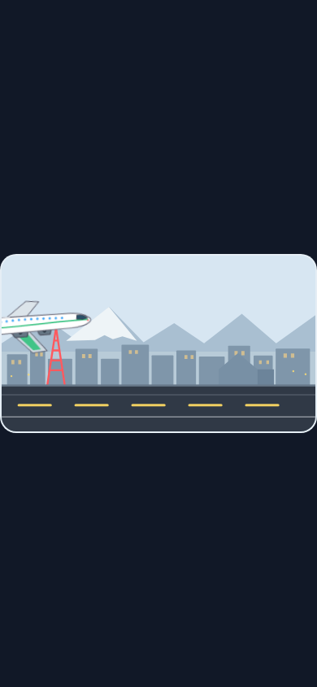
01 · Sam exits the landed plane hungry
The arrival beat finishes before the character starts building a food prompt.
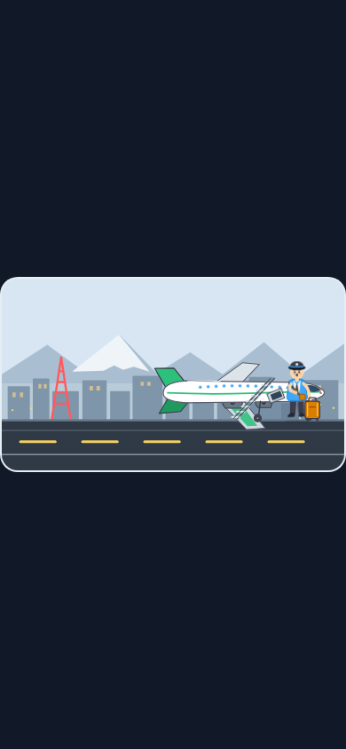
02 · Sam taps gate 1
The guide character moves to and taps the real prompt gate.
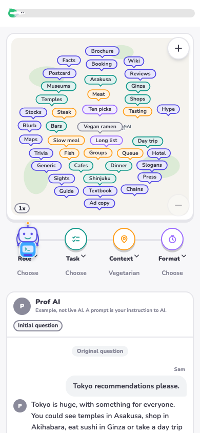
03 · Sam chooses Local Guide
The character selects one option from the gate menu.
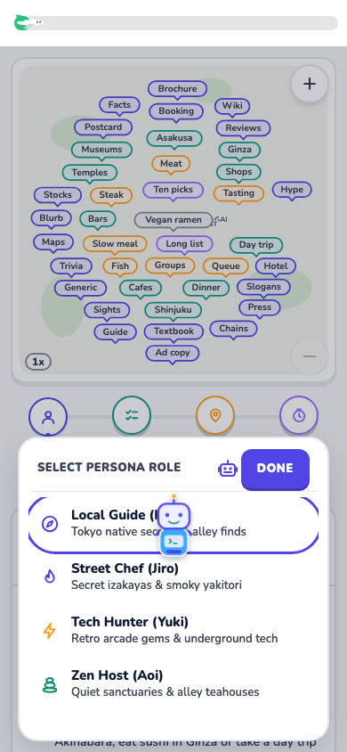
04 · Local Guide added
The prompt updates with this detail before Sam moves to the next gate.
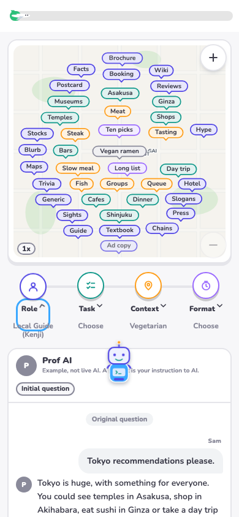
05 · Sam taps gate 2
The guide character moves to and taps the real prompt gate.
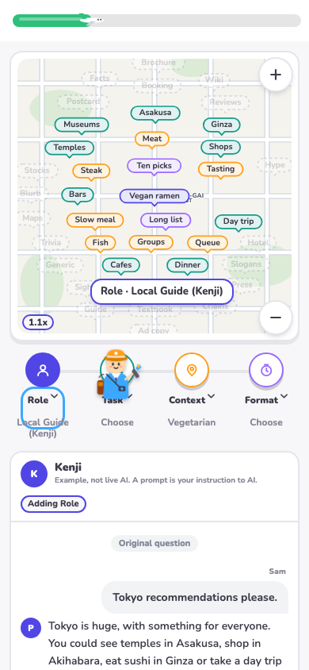
06 · Sam chooses Lunch spot
The character selects one option from the gate menu.
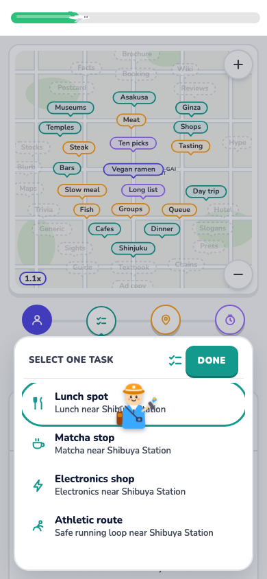
07 · Lunch spot added
The prompt updates with this detail before Sam moves to the next gate.
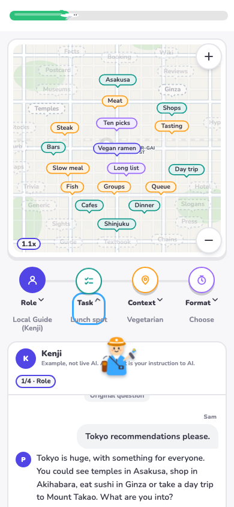
08 · Sam taps gate 3
The guide character moves to and taps the real prompt gate.
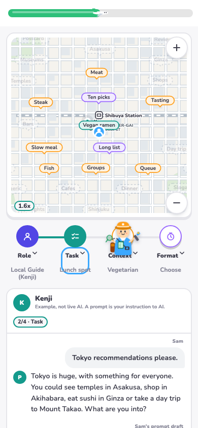
09 · Sam chooses Vegetarian
The character selects one option from the gate menu.
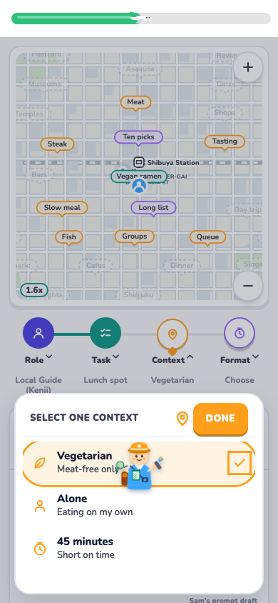
10 · Vegetarian added
The prompt updates with this detail before Sam moves to the next gate.
11 · Sam taps gate 4
The guide character moves to and taps the real prompt gate.
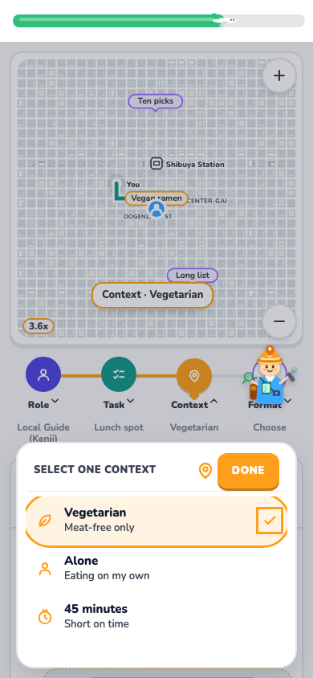
12 · Sam chooses Short list
The character selects one option from the gate menu.
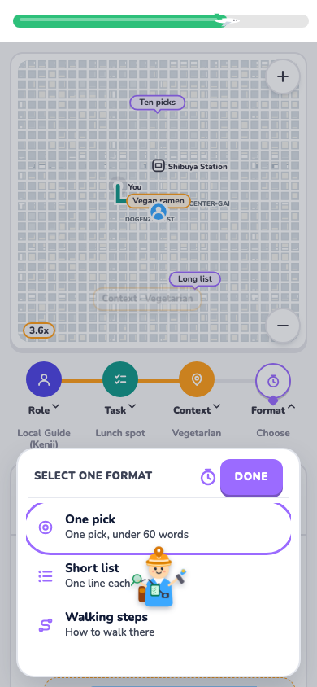
13 · Short list added
The prompt updates with this detail before Sam moves to the next gate.
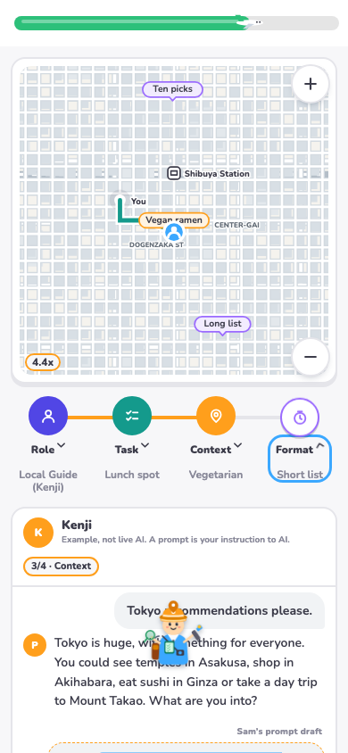
14 · AI gives a specific lunch answer
The completed prompt produces a nearby vegetarian food recommendation.
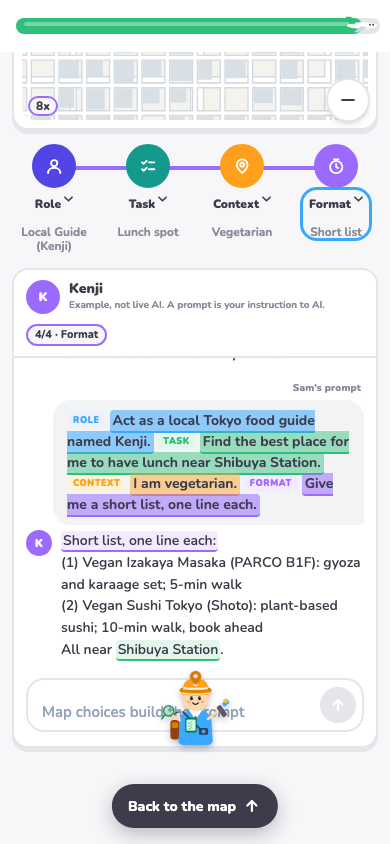
15 · Sam follows the map to the restaurant
The same character reaches the warm restaurant scene after the answer.
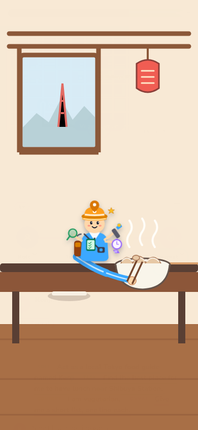
16 · Sam eats
The character lifts a bite from the table to their mouth.
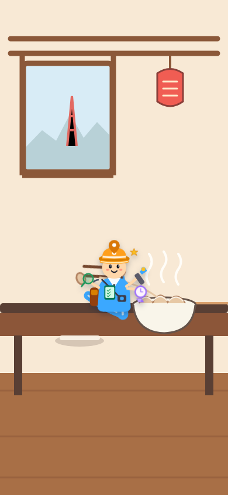
17 · Reduced motion still shows the arrival
The plane lands and hungry Sam exits with reduced motion enabled.
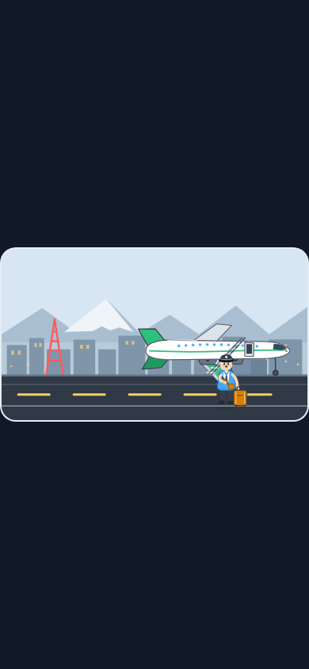
18 · Reduced motion reaches the lesson UI
The reduced-motion timeline still completes the answer and restaurant story.
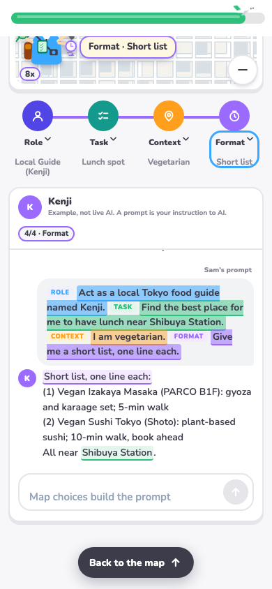